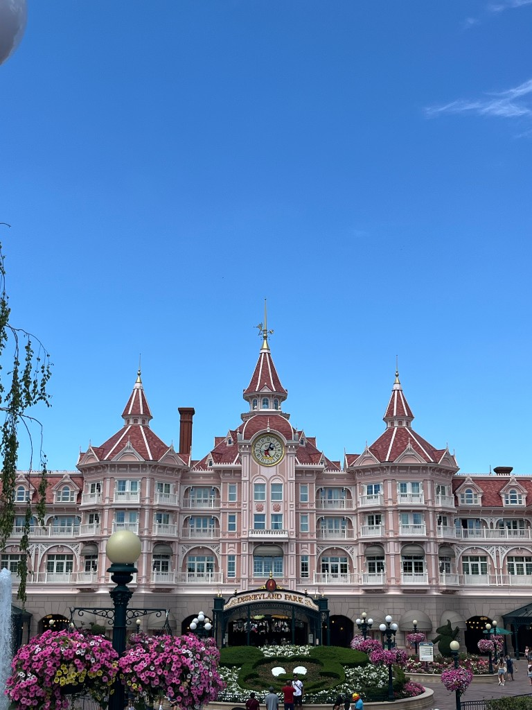
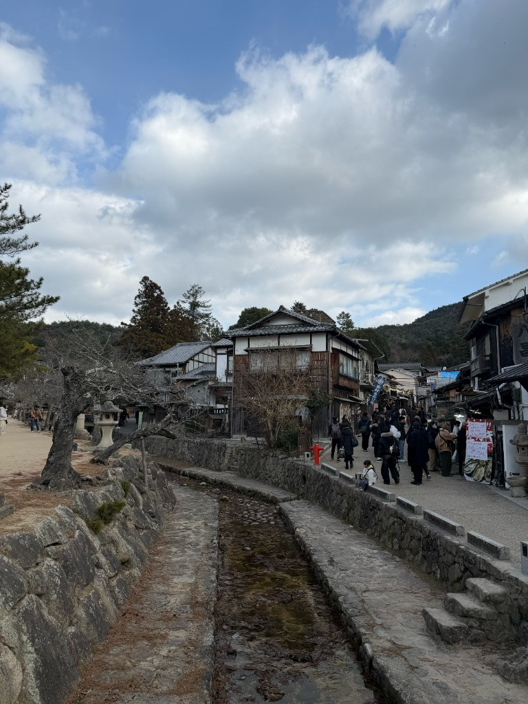

One thing I really enjoy outside of coursework is building AI agents. I find it fun to pick a random real-world problem and try to make an agent that can handle it on its own — it's kind of like giving a robot a to-do list and seeing if it can figure things out. Sometimes the agents work great. Sometimes they go completely off track and do something hilarious. But that's what makes it interesting to me — debugging agent behaviour feels like solving a puzzle.
Here are a few experiments I've enjoyed working on — click to see what happened:
I built a scraping agent that monitors competitor prices across e-commerce sites every few hours. The fun part was watching it handle sites that kept changing their HTML layout — I had to teach it to adapt on the fly using Playwright and BeautifulSoup. It now sends me a Telegram alert whenever a price drops by more than 10%.
I tried setting up a multi-agent pipeline where Agent A scrapes news articles, Agent B cleans and extracts key facts, and Agent C writes a summary report. The first few runs were a disaster — Agent C once wrote a report entirely about football because Agent B passed it the wrong data. Getting them to coordinate properly using LangGraph taught me a lot about error handling and pipeline design.
I got really into n8n for a while and tried to automate my entire morning routine — pull overnight emails, summarise them with an LLM, check my calendar, and send me a daily briefing on Telegram before I even wake up. It mostly works, except the one time it summarised a spam email as "urgent business opportunity" and I almost replied to it.
I built a RAG agent that indexes all my university lecture notes and lets me ask questions in plain English. Instead of searching through dozens of PDFs before an exam, I can just ask "What's the difference between LSTM and GRU?" and get an answer with the exact source. It's genuinely the most useful thing I've built for myself.
When I need a break from the screen, I like to travel. I've been lucky enough to visit some amazing places across Asia and Europe. Whether it's walking along the Seine in Paris, exploring temples in Japan, or just finding good street food in a random alley, travelling gives me a fresh perspective. Honestly some of my best project ideas come to me when I'm exploring somewhere new.


"There's something special about being somewhere completely different from home — it resets the way I think about problems and usually I come back with a bunch of new ideas."
Seeing how different cultures solve everyday problems — from Tokyo's train system to London's public signage — changed how I approach UX and system design. Simple solutions that just work are always the hardest to build.
Navigating a city where I don't speak the language forced me to think creatively. That same resourcefulness carries into coding — when the obvious solution won't work, I've learned to look at the problem from a completely different angle.
Getting lost in Osaka at midnight with a dead phone taught me patience like no production bug ever could. Travel and debugging share the same truth: stay calm, break the problem into smaller pieces, and keep moving forward.